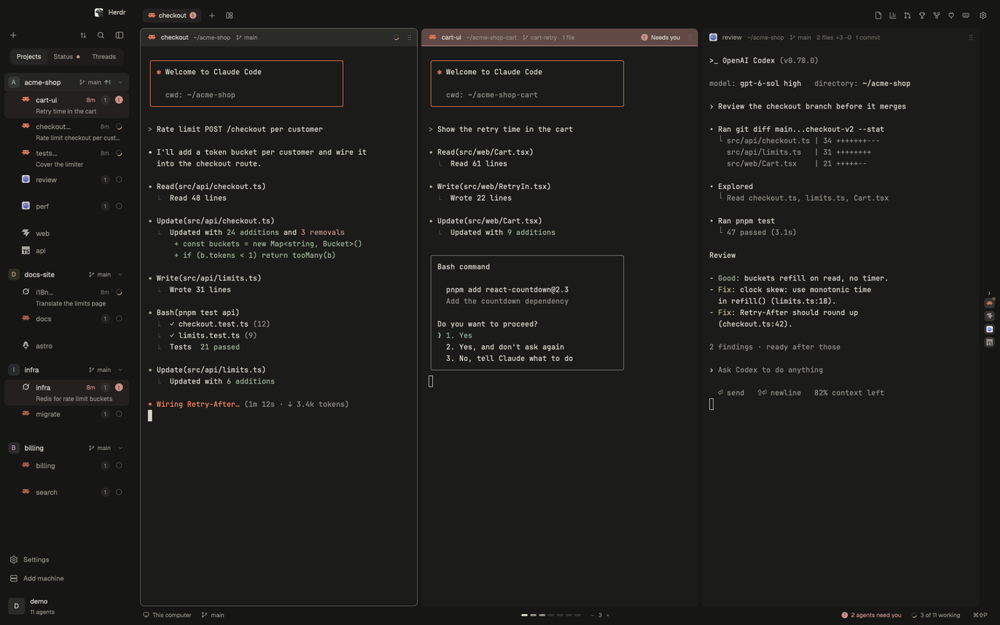
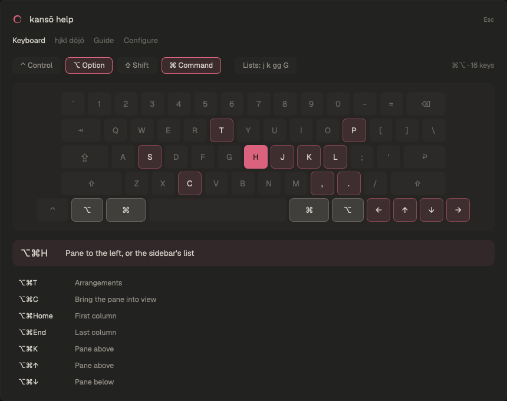
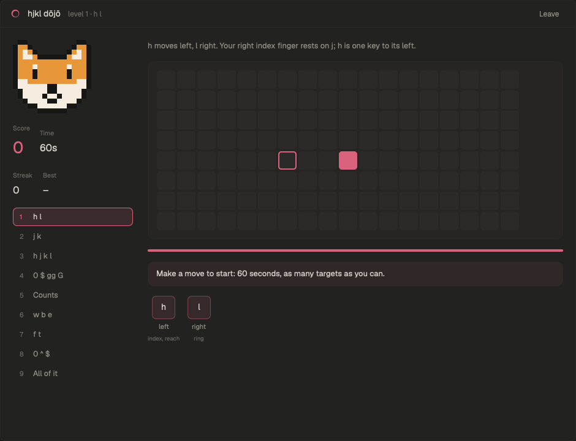
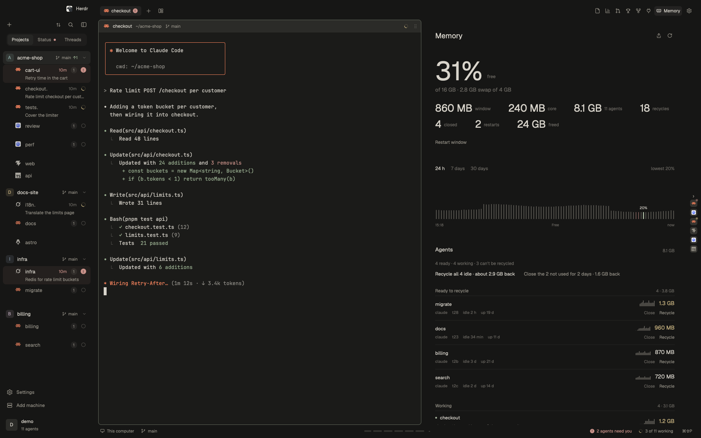
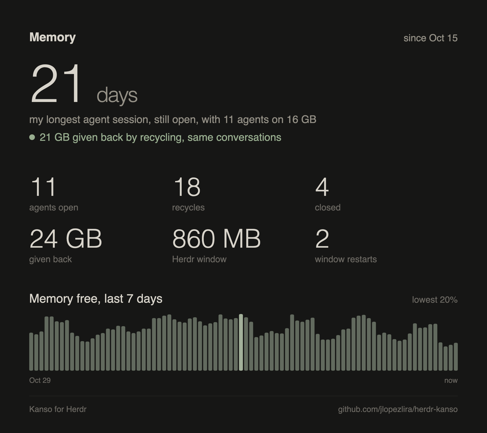
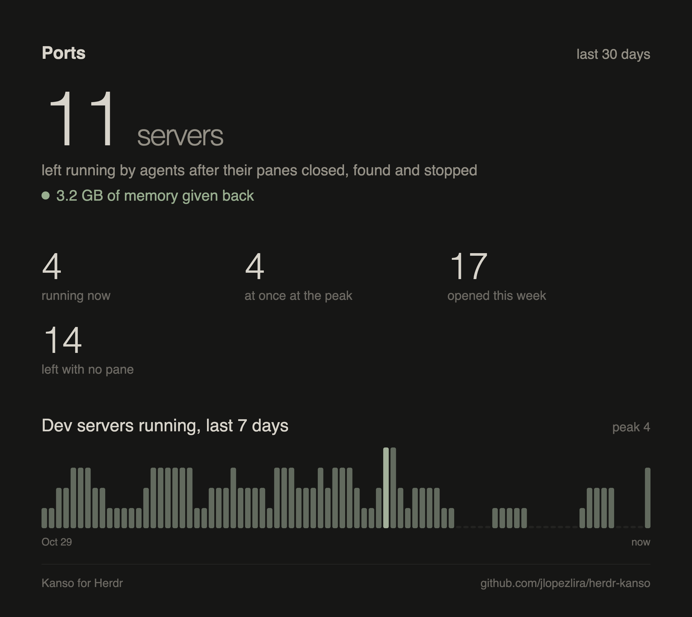

Every agent gets a readable pane, the one waiting on you comes first, and idle Claude Code sessions recycle on the same conversation so your machine lasts weeks. Returning to a project shows what changed in three quiet lines.
Free and open source. A layout for the Herdr desktop app, not the Herdr TUI, on macOS, Windows and Linux.

Works with the agents and editors you already use
Claude Code
Codex
Grok
Pi
OpenCode
any agent in a terminal
Cursor
VS Code
Zed
Neovim
GitHub
Installed in one sentence
No config files to write. Your agent does it, and kansō tells you when a stable update is ready. Early, in settings, is there for what is still being tested.
1
Tell your agent
Paste this into Claude Code, Codex or any agent running in Herdr.
Your terminals and agents keep running. The sidebar, the strip and the panels appear around them.
3
Let them all run
Open as many agents as you like. Turn on the guard in Memory once, and kansō keeps long sessions light.
Everything around your agents, one key away
Panels open beside the strip and only work while you look at them.
A strip, not a grid
Each terminal keeps its width. New panes open beside the one you are in and the view glides to it. Nothing gets squeezed. Files, commits and the pull request in a pane's header open that work, and stay while the agent works.
What your AI work is worth at list price, per project, model and task. Turn on Sync from another computer's row in the sidebar, and its share joins the total.
Every worktree agents made, what removing it would lose, and the disk it gives back.
Put agents to sleep, wake them where they were
Waiting on a backend ticket? Sleep the agents that wait on it. They exit with their conversation kept, so nothing of them runs or holds memory, and wake tomorrow on the same conversation. Asleep, the project is one row in the sidebar until you click it.
One agent, a tab or a projectThe moon in a pane's header sleeps that agent and leaves the rest of the tab; the project's menu sleeps a tab or all of it. Sleep and Send stay on the pane you are in once it has finished.
The same conversationWake brings each agent back on its conversation, in its tab, with its folder and options, and checks it is really there.
Careful with your workA draft in the prompt is cleared, never sent. An agent at work or waiting on you doesn't sleep.
On another computerThe record stays on the computer that owns the agents, so the same tabs are asleep wherever you sit, and waking from either works. When that computer does not answer, its rows stay listed and Wake waits.
See what your agents made, without leaving
Images, the eye in the tab bar, shows the newest picture the agent in focus made, big beside it, and a circle for each picture. The one you are on takes that picture's color. Pin a spot, and the agent gets your notes at once.
Reads the conversationEvery picture the agent wrote, with its whole path, even when its screen has moved on. The newest shows by itself, and again when the agent writes it again.
Notes with pinsClick the picture to pin a spot: a dialog asks what about it, and the note lines up under the picture with its number. ⌘↩ sends them all: the agent reads "About the file" and, pin by pin, where it sits and what you said.
Pictures onlyDocuments, PDFs and code stay with the apps that open them, and links and HTML with the browser. An agent can put a picture in Images itself with herdr-app do 'kanso-tabs.look path'.
Projects you keep, containers you can see
A project is a folder you added. It stays in the sidebar when its last agent closes, and its + starts the agent you used there last, in the folder or in a new worktree on a branch you name. A remote machine's header turns its connection off and back on without setting it up again; what was running there keeps running. Files, Preview and Images work for a space on that computer. A text file in Preview can be edited and saved there, and a note on a picture still sends. The pull request panel opens on what is stopping it, and offers one action.
Threads by projectConversations grouped under the project they belong to, each with a + for a new one. Remove a project and its space closes; files are never touched.
ContainersWhat you would open Docker Desktop for: a project's compose files with Up, Rebuild and Down, every container's memory, and Quit Docker to get the VM's memory back.
Markdown reviewsAn agent runs md-review plan.md, the file opens in the Markdown panel, you write your comments in it and press Done: the agent gets them.
Keys you can see, moves you can learn
Needs you in the sidebar lists waiting agents across projects. Cmd+J cycles through blocked agents first, then unseen finished turns, oldest first. Click the count to choose one.
⌘⌥ h j k l move between panes as vim does, and every list answers j, k, gg and G. ⌘? draws your own keys on a keyboard, layer by modifier.
Windows has its own shortcuts for panes, spaces, panels and search. They use Ctrl and Alt, and they leave the Windows key and AltGr alone. Reset restores the shortcuts for your system, and Help follows the bindings you have.


kansō help
Hold ⌘ ⌥ ⇧ ⌃, or press a chord, and the keys that do something light up with what they do. A guide to everything, and where to set it up.
hjkl dōjō
Nine levels, from h and l on a board to w b e, f t and gg G on real lines of code. Rounds of ten targets, points for the fewest moves, a hint when you stop to think, and a pet cheering a streak: Hachi the shiba, Codex's pets, Clawd, or one of your own.
Agent sessions that last weeks
Agents that stay open for weeks grow. On macOS and Windows, kansō's guard checks every minute and cleans up without losing a conversation. On Windows the check runs in the background, without a console, and starts again when you sign in.
Recycles bloated agentsA Claude agent idle for 20 minutes and past 900 MB exits and comes back on the same conversation, in a fresh process.
Never under your handsNot the agent you are on, not while you type, never one that is working.
Names what holds the memoryWhen the machine runs low you get a notice with the heaviest processes.

The device, beside the agent that writes it
Simulator, in the tab bar, shows an iOS simulator or an Android emulator on this computer: its screen, at the device's shape, and touch, typing, Home, Lock, volume and rotate. Cmd+Shift+S opens it, and Ctrl+Shift+M on Windows. It stays off until this computer has Xcode's simctl or an Android SDK.
Boot, then the screenPick a device by its name and OS. Boot starts one that is off. The picture is live while frames arrive, and Reconnect brings a stalled stream back.
This computer onlyA space on another machine still shows the devices here. On Linux and Windows there is no iOS row. Closing the panel, or leaving the window behind, stops the stream.
Nothing downloaded until you say soiOS needs serve-sim. The panel names the missing tool, and one button runs npx --yes serve-sim@0.1.49 --version. Nothing is fetched before that press.
Show what your agents did
Memory, Ports, Spend, Shipped and the hjkl dōjō turn your numbers into a card for X, LinkedIn or Bluesky. Counts and sizes only, never a project or a path.


Give your agents room to work
Free and open source, Apache-2.0. Tell your agent: